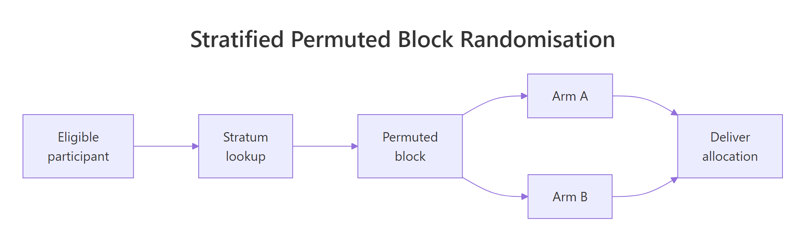
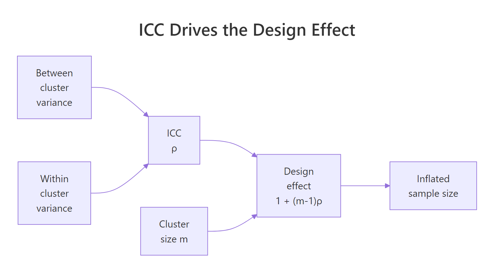

Clinical Trials Design in R: Randomization, Adaptive Designs & ICC
Clinical trials stand or fall on three design decisions: how participants are randomised, whether the design adapts as data accrue, and how clustering inflates the required sample size. This tutorial implements all three in R, from permuted block schedules to O'Brien-Fleming group-sequential boundaries to design-effect adjustments driven by the intraclass correlation coefficient (ICC).
How do you randomise participants to treatment arms in R?
Randomisation is the single assumption that turns a comparison into a causal claim. A predictable sequence lets recruiters steer sicker patients away from experimental arms and silently bakes confounding into the final estimate. In R, you can generate an unpredictable yet balanced schedule in three lines of base R. Let's build one for a six-patient block of a two-arm trial.
The core pattern is simple. We take the fixed allocation ratio inside a block (three A's and three B's for balance) and shuffle it with sample(). The result is a random order that still produces exact balance at every block boundary.
Six slots, three A's and three B's, order is random. That is the heart of permuted block randomisation. Stringing many such blocks together gives a full trial schedule while guaranteeing the treatment counts never drift apart by more than half a block.

Figure 1: Stratified permuted block randomisation flow, eligible participants enter a stratum, are assigned within a block, and proceed to the allocated arm.
Let's scale that up. A permuted_block() helper takes the target sample size, the arm labels, and a vector of candidate block sizes, then returns a schedule with varying blocks. Mixing block sizes prevents a recruiter from predicting the last slot of the current block, which is the hardest problem fixed-size blocks have.
The running counts of arm A at each checkpoint hug the ideal of k/2, so imbalance never exceeds half of the largest block. That guarantee is why permuted blocks are the default in regulated trials.
c(4, 6, 8) hides the boundary and closes that backdoor.sample() with replacement, can drift by several patients and ruin small subgroup analyses. The permuted block trades a sliver of randomness for guaranteed running balance.Try it: Write ex_block_of_six(), a function that returns a single shuffled block of size 6 assigning participants to arms "Drug" and "Placebo" with 3 each. Do not rely on permuted_block().
Click to reveal solution
Explanation: rep(..., each = 3) builds the balanced vector c("Drug","Drug","Drug","Placebo","Placebo","Placebo"), and sample() without a size argument shuffles it in place.
How do you stratify randomisation to balance key covariates?
Randomisation balances expectations across arms, not every single sample. If disease severity is a known prognostic factor, chance alone can still deliver a trial where the treatment arm is sicker by bad luck. Stratified randomisation blocks that failure mode by running a separate permuted block schedule inside each level of the prognostic variable.
The code pattern is: loop the permuted_block() function once per stratum, then stitch the results together with a stratum label. We will demonstrate a two-arm trial stratified by severity (Mild, Moderate, Severe) with 20 patients per stratum.
Every stratum ends up perfectly balanced between arms. The balance holds at interim counts too because the permuted blocks inside each stratum guarantee running balance. That is the whole point of stratification, no prognostic factor can silently confound the primary comparison.
Minirand package) adaptively assign new patients to keep covariate totals close.Try it: Extend the pattern to two-factor strata. Write ex_two_factor_schedule() that takes levels for site ("Hospital1", "Hospital2") and severity ("Mild", "Severe"), and returns a stratified schedule with 12 patients per combination (48 total).
Click to reveal solution
Explanation: expand.grid() enumerates the stratum combinations. Running permuted_block() inside each cell guarantees arm balance per cell, which is exactly the condition stratified randomisation aims to preserve.
When is an adaptive design better than a fixed design?
A fixed design locks in the sample size, the analysis plan, and the treatment arms before the first patient is enrolled. An adaptive design pre-specifies rules that allow changes as data accrue, such as stopping early for efficacy, dropping a futile arm, or re-estimating the sample size. The key word is pre-specified. Without a rule defined in the protocol before unblinding, any change is post-hoc and invalidates the Type I error rate.
Four adaptive families cover most regulatory work:
| Family | What adapts | Typical use |
|---|---|---|
| Group sequential | Early stopping for efficacy or futility | Confirmatory trials with long follow-up |
| Sample size re-estimation | Final sample size based on interim nuisance params | Effect size or variance uncertain at design |
| Response adaptive | Allocation ratio favours the better arm | Exploratory trials, rare diseases |
| Arm dropping | Futile arms closed at interim | Multi-arm dose-finding |
To see why naive peeking is dangerous, simulate a trial under the null hypothesis (no true effect) and take five looks at the Z-statistic. At each look, if |Z| > 1.96, you stop and claim significance. That is the textbook mistake.
The true Type I rate is about 14%, nearly triple the nominal 5%. Every extra look adds another chance to stumble across |Z| > 1.96 purely by sampling noise. Group-sequential designs fix this by raising the bar at each look so the cumulative error stays at 5%.
Try it: Modify sim_peeking() to accept the number of looks K and estimate the naive Type I rate for K = 3 and K = 10 at the unadjusted 1.96 threshold.
Click to reveal solution
Explanation: More looks give more chances to cross the unadjusted threshold, and the rate climbs monotonically with K. This is exactly the inflation that O'Brien-Fleming and Pocock boundaries correct.
How do you plan an O'Brien-Fleming group-sequential trial in R?
O'Brien-Fleming (OBF) boundaries solve the peeking problem by making early looks very strict and loosening gradually toward the final look. Intuitively, strong evidence is required to stop a trial in its infancy, but near the end the threshold approaches the usual 1.96. The canonical approximation for look k of K at final critical value c_K is:
$$c_k = c_K \sqrt{K/k}$$
Where:
- $c_k$ is the critical value for look $k$
- $c_K$ is the final critical value, calibrated so the family-wise Type I rate equals $\alpha$
- $K$ is the total number of planned looks, $k$ runs from 1 to $K$
The calibrated final value $c_K$ for two-sided $\alpha = 0.05$ with five equally spaced looks is 2.040 (from standard tables). The earlier boundaries are derived from the scaling formula.
Look 1 demands |Z| > 4.56, essentially impossible by noise, while look 5 settles near 2.04. The schedule concentrates stopping power at the final look but still allows an emphatic early win.
Let's verify this controls Type I error by simulating 10,000 null trials, checking the Z-statistic against the OBF boundary at each look, and counting how often any threshold is crossed.
The empirical Type I rate is 0.051, effectively the nominal 0.05. OBF converts five peeks from a 14% disaster into a disciplined 5% design without changing how the data are collected.
rpact or gsDesign. Both packages compute exact boundaries via the Lan-DeMets alpha-spending framework, handle unequal information fractions, and produce the sample-size tables reviewers expect. This base-R walkthrough is for building intuition, not for your IND filing.Try it: Compute the OBF boundaries for K = 3 looks using the calibrated final critical value c_K = 1.993 (from OBF tables for two-sided alpha = 0.05, K = 3).
Click to reveal solution
Explanation: The same scaling law applies, but with fewer looks the first boundary is less extreme. Fewer looks means less correction, closer to the fixed-sample 1.96 at the end.
How does the intraclass correlation coefficient inflate sample size for cluster-randomised trials?
Cluster-randomised trials allocate whole groups (clinics, schools, GP practices) rather than individuals. Patients treated in the same clinic share a doctor, a protocol, and unmeasured environmental factors, so their outcomes are positively correlated. That correlation reduces the effective sample size. The intraclass correlation coefficient (ICC), usually written $\rho$, measures it as the share of total variance that is between-cluster:
$$\rho = \frac{\sigma_B^2}{\sigma_B^2 + \sigma_W^2}$$
Where:
- $\sigma_B^2$ is the between-cluster variance
- $\sigma_W^2$ is the within-cluster variance
- $\rho$ ranges from 0 (no clustering) to 1 (all variation is between clusters)
The correction that converts individual-level sample size to cluster-level sample size is the design effect:
$$DE = 1 + (m - 1)\rho$$
Where $m$ is the average cluster size. With $m = 30$ and $\rho = 0.05$, $DE = 1 + 29 \times 0.05 = 2.45$, so a cluster trial needs 2.45 times as many participants as an individually-randomised trial with the same power. Ignore this and you ship an underpowered study.
Two patterns jump out. Design effect scales roughly linearly with cluster size at fixed ICC, and it scales linearly with ICC at fixed cluster size. A seemingly tiny ICC of 0.05 combined with 50 patients per cluster triples the required sample size. That is the true cost of clustering.

Figure 2: ICC and cluster size together determine the design effect that inflates the required sample size.
Try it: Given an individually-randomised sample size target of n_ind = 400 per arm, ICC = 0.04, and cluster size m = 25, compute the cluster-adjusted per-arm sample size.
Click to reveal solution
Explanation: Multiply the individual target by the design effect, then divide by cluster size to get the number of clusters. The ceiling ensures you recruit enough whole clusters.
How do you estimate ICC from pilot data in R?
ICC estimation is a variance decomposition. Fit a one-way random-effects model on the pilot data, extract the between-cluster and within-cluster variance components, and compute their ratio. Base R's aov() gives the components directly via method-of-moments, which is usually good enough for planning purposes.
First, simulate a pilot dataset with a known true ICC so we can verify the estimator. We will generate 20 clusters of 30 patients with between-cluster SD chosen so that the true ICC is 0.04.
Now estimate ICC by pulling the mean squares out of aov() and solving for $\sigma_B^2$ and $\sigma_W^2$ via the standard random-effects expectations. With cluster size $m$, between-cluster mean square $MS_B$, and within-cluster mean square $MS_W$:
$$\hat{\sigma}_B^2 = \frac{MS_B - MS_W}{m}, \qquad \hat{\sigma}_W^2 = MS_W$$
The estimate is 0.037 against a true value of 0.04, well within the sampling uncertainty expected at this sample size. The max(0, ...) guard is a practical fix for a quirk of method-of-moments, the raw formula can return a negative variance when between-cluster signal is weak relative to sampling noise.
ICC and lme4 packages automate this in full R environments. ICC::ICCbare(cluster, y, data = df) wraps the same variance decomposition with confidence intervals, and lme4::lmer(y ~ (1 | cluster)) gives a REML-based estimate that behaves better in small samples. The base-R version here is transparent and fast to reason about.Try it: Regenerate the pilot data with true_icc = 0.10, keeping 20 clusters of 30, then rerun the estimator. Save the result to ex_icc_hat.
Click to reveal solution
Explanation: The same estimator recovers the higher ICC, 0.109 against a true 0.10. Stronger clustering signal gives a tighter estimate because the numerator MS_B - MS_W is larger relative to sampling noise.
Practice Exercises
Exercise 1: Stratified three-arm block randomisation
Write my_stratified_schedule(n_per_stratum, strata, arms, block_sizes) for a three-arm trial. Verify that every stratum ends up balanced across arms.
Click to reveal solution
Explanation: Three arms require block sizes that are multiples of three, so c(3, 6, 9) is the natural choice. Inside each stratum, the permuted block function shuffles the allocation while preserving exact per-arm balance.
Exercise 2: Cluster RCT sample size planning
A team plans a cluster RCT for a GP-practice smoking cessation intervention. Individual-level power calculation suggests n = 600 per arm. The pilot estimated ICC = 0.03. Average practice size is 40 patients. Compute the cluster-adjusted sample size and the number of practices needed per arm. Save to my_clusters_per_arm.
Click to reveal solution
Explanation: DE = 1 + 39 * 0.03 = 2.17, so the adjusted per-arm sample is 600 * 2.17 = 1302, divided by 40 gives 33 practices per arm. The team should plan 66 practices total.
Exercise 3: OBF verification at K = 4
Compute OBF boundaries for K = 4 looks using the calibrated final critical value c_K = 2.024, then simulate 20,000 null trials to verify the Type I rate stays near 0.05. Save the empirical rate to my_type1.
Click to reveal solution
Explanation: Four looks give a slightly more relaxed first boundary than the five-look case (4.05 vs 4.56), and the calibrated final critical value drops to 2.02. The empirical Type I rate lands near 0.05, confirming the boundary family still controls error with fewer looks.
Complete Example
Design a 2-arm cluster RCT of a school-based literacy intervention with one pre-planned interim analysis. Inputs: 24 schools available, ICC = 0.03, average cluster size m = 25 students, target detectable standardised effect 0.30, two-sided alpha = 0.05, 80% power. The workflow chains the three pieces of this tutorial into a single end-to-end plan.
The feasibility check fails, 26 schools required against 24 available. The team has three options: accept slightly lower power, negotiate for two more schools, or tighten the pilot ICC estimate (if the true ICC is below 0.03, the design effect shrinks and fewer schools suffice). For the sake of this example, assume two extra schools are added and proceed.
The plan: recruit 26 schools stratified by size, randomise within each tertile via permuted blocks, analyse at 50% information with a strict early-stopping threshold of |Z| > 2.80, and take the final decision at |Z| > 1.98. Every element is pre-specified before the first school is assigned, which is what keeps the 5% error rate honest.
Summary
| Technique | R approach | When to use |
|---|---|---|
| Simple randomisation | sample() |
Very large trials where imbalance averages out |
| Permuted block | Base R permuted_block() or blockrand |
Standard default, prevents running imbalance |
| Stratified block | Loop over strata calling permuted_block() |
Up to 3 or 4 prognostic factors |
| Minimisation | Minirand package |
Many prognostic factors, small trials |
| Group-sequential | OBF scaling by hand, or rpact, gsDesign |
Pre-planned interim analyses |
| Sample-size re-estimation | rpact with combination tests |
Nuisance parameters uncertain at design |
| Cluster RCT sizing | Design effect $1 + (m-1)\rho$ | Randomise groups not individuals |
| ICC estimation | aov() variance decomposition, or ICC, lme4 |
Sample-size planning from pilot data |
References
- Pallmann, P., Bedding, A. W., Choodari-Oskooei, B., et al. "Adaptive designs in clinical trials: why use them, and how to run and report them." BMC Medicine 16, 29 (2018). Link
- Wassmer, G. and Pahlke, F. "rpact: Confirmatory Adaptive Clinical Trial Design and Analysis." R package documentation. Link
- Snow, G. "blockrand: Randomization for Block Random Clinical Trials." CRAN package. Link
- Higgins, P. "Randomization for Clinical Trials with R." Reproducible Medical Research with R, Chapter 24. Link
- O'Brien, P. C. and Fleming, T. R. "A multiple testing procedure for clinical trials." Biometrics 35, 549-556 (1979).
- Donner, A. and Klar, N. Design and Analysis of Cluster Randomization Trials in Health Research. Arnold (2000).
- Campbell, M. K., Fayers, P. M., and Grimshaw, J. M. "Determinants of the intracluster correlation coefficient in cluster randomized trials." Clinical Trials 2, 99-107 (2005).
- CRAN Task View: Clinical Trial Design, Monitoring, and Analysis. Link
Continue Learning
- Sample Size Planning in R covers the individual-level sample size formulas that feed into the design effect inflation on this page.
- Conditional Power and Sample Size Re-Estimation in R goes deeper on the adaptive machinery behind mid-trial sample-size updates.
- Statistical Power Analysis in R lays out power calculations across test families, the input to every trial design decision.